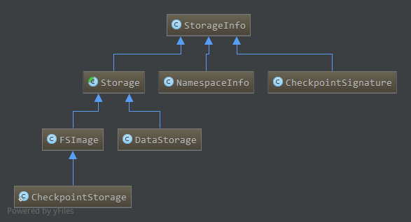
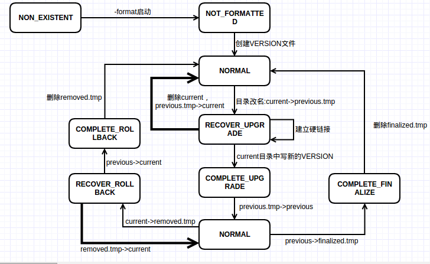
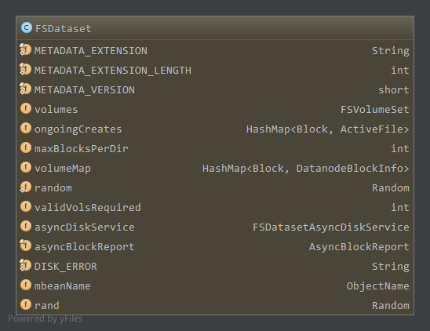

Hadoop版本:Hadoop-1.2.1
参考：《Hadoop技术内幕-深入解析Hadoop Common和HDFS架构设计与实现原理》
DataNode的本地存储由DataStorage和FSDataset负责，本地存储目录通过dfs.data.dir配置，可配置多个存储目录。每个目录下有多个目录，current目录保存VERSION文件，区块文件，区块元数据文件，previous目录保存上一个版本的文件，若干临时目录用于升级，回滚，升级提交等工作。blocksBeingWritten目录用于保存Client正在写的区块文件，tmp目录保存DataNode之间区块复制正在写的区块文件，还可能有detach目录，用于硬链接的分离。
DatasStorage负责版本文件，文件锁，工作目录，不同版本之间工作目录以及升级，回滚，升级提交等工作。涉及到current目录，previous目录，以及相关临时目录。
而FSDataset负责数据块和本地文件的对应关系管理，DataNode数据块的读写复制等操作都需要通过FSDataset管理的数据块和本地文件关系来进行。涉及到current目录，blocksBeingWritten目录，tmp目录，detach目录等。
DataStorage相关类图如下:

DataStorage继承Storage抽象类，而Storage又继承StorageInfo。
StorageInfo包含了节点的基本存储信息，包括layoutVersion，namespaceID，cTime，分别是HDFS存储系统版本号，存储系统标识，存储系统创建时间。
Storage为存储管理的抽象类，在StorageInfo的基础上增加了节点类型storageType，管理着多个存储目录，每一个存储目录使用其内部类StorageDirectory表示。节点的layoutVersion，namespaceID,cTime,storageType保存在每个存储目录的current目录下的VERSION文件中。
DataStorage继承Storage，它的storageType为NodeType.DATA_NODE，是数据节点的存储管理类，每一个通过dfs.data.dir配置的目录都通过一个StorageDirectory对象管理。
类图中的其他类，NamespaceInfo用于DataNode和NameNode通信的DataNodeProtocol接口，DataNode向NameNode注册时，首先通过versionRequest获取集群的信息，返回一个NamespaceInfo对象。CheckpointSignature用于NameNode和SecondaryNameNode通信的NameNodeProtocol接口，标识了NameNode元数据的检查点。FSImage管理NameNode的文件结构，与DataStorage对应。CheckpointStorage管理SecondaryNameNode的文件结构。
StorageInfo比较简单，下面分析Storage
1. Storage
1.1 成员，构造
Storage继承StorageInfo，是节点的存储管理抽象类，管理节点的所有存储目录，数据节点对应的DataStorage和FSImage都继承该类1
public abstract class Storage extends StorageInfo
成员属性如下1
2private NodeType storageType; // Type of the node using this storage
protected List<StorageDirectory> storageDirs = new ArrayList<StorageDirectory>();
storageType，节点类型，目前支持数据节点和名字节点1
2
3
4static public enum NodeType {
NAME_NODE,
DATA_NODE;
}storageDirs,管理所有的存储目录，存储目录为StorageDirectory类型，StorageDirectory为Storage的内部类，提供了存储目录管理的大部分操作
StorageDirectory的成员属性如下:1
2
3File root; //根目录
FileLock lock; //存储锁
StorageDirType dirType; //存储目录类型如上，每个存储目录包含根目录
root；每个存储目录有一个文件锁，对应的文件为root目录下的in_use.lock，有数据节点管理该存储目录时会创建该文件并获得其独占文件锁，保证只有一个DataNode使用该目录；dirType为StorageDirType类型，对DataNode来说只有一种存储目录，因此一般使用null，而NameNode中有不同的存储目录类型1
2
3
4
5static enum NameNodeDirType implements StorageDirType {
UNDEFINED,
IMAGE,
EDITS,
IMAGE_AND_EDITS;因此，StorageDirectory有针对此的不同构造函数
1
2
3
4
5
6
7
8public StorageDirectory(File dir) {
this(dir, null);
}
public StorageDirectory(File dir, StorageDirType dirType) {
this.root = dir;
this.lock = null;
this.dirType = dirType;
}StorageDirectory中的方法提供了存储目录管理的大部分操作，具体见后面分析。
Storage构造1
2
3
4
5
6
7
8
9
10
11
12protected Storage(NodeType type) {
super();
this.storageType = type;
}
protected Storage(NodeType type, int nsID, long cT) {
super(FSConstants.LAYOUT_VERSION, nsID, cT);
this.storageType = type;
}
protected Storage(NodeType type, StorageInfo storageInfo) {
super(storageInfo);
this.storageType = type;
}
构造函数中只是初始化与版本信息相关的成员，可通过addStorageDir添加管理的存储目录1
protected void addStorageDir(StorageDirectory sd) { storageDirs.add(sd); }
1.2 管理的文件目录
Storage负责节点存储目录的管理，其管理的目录或重要文件如下，这些文件或目录对应为一个存储目录的，当DataNode管理多个存储目录时，每个存储目录下都会有这些文件，对这些文件的操作通过StorageDirectory中的方法完成1
2
3
4
5
6
7
8
9private static final String STORAGE_FILE_LOCK = "in_use.lock";
protected static final String STORAGE_FILE_VERSION = "VERSION";
public static final String STORAGE_DIR_CURRENT = "current";
private static final String STORAGE_DIR_PREVIOUS = "previous";
private static final String STORAGE_TMP_REMOVED = "removed.tmp";
private static final String STORAGE_TMP_PREVIOUS = "previous.tmp";
private static final String STORAGE_TMP_FINALIZED = "finalized.tmp";
private static final String STORAGE_TMP_LAST_CKPT = "lastcheckpoint.tmp";
private static final String STORAGE_PREVIOUS_CKPT = "previous.checkpoint";
in_use.lock，为文件锁，DataNode运行时创建在root目录下，关闭时删除。通过StorageDirectory中的lock方法获取文件锁并创建文件1
2
3
4
5
6
7
8
9
10
11
12
13
14
15
16
17
18
19
20
21
22
23
24
25
26
27
28
29
30
31
32public void lock() throws IOException {
this.lock = tryLock();
if (lock == null) {
String msg = "Cannot lock storage " + this.root + ". The directory is already locked.";
LOG.info(msg);
throw new IOException(msg);
}
}
FileLock tryLock() throws IOException {
boolean deletionHookAdded = false;
File lockF = new File(root, STORAGE_FILE_LOCK);//文件锁在存储目录下，名字为in_use.lock
if (!lockF.exists()) {
lockF.deleteOnExit();//文件锁在文件系统(File对应的本地文件系统)关闭即关机，或虚拟机关闭(即DataNode关闭)时自动删除
deletionHookAdded = true;
}
RandomAccessFile file = new RandomAccessFile(lockF, "rws");
FileLock res = null;
try {
res = file.getChannel().tryLock();//通过通道获取文件锁对象
} catch(OverlappingFileLockException oe) {
file.close();
return null;
} catch(IOException e) {
LOG.error("Cannot create lock on " + lockF, e);
file.close();
throw e;
}
if (res != null && !deletionHookAdded) {
lockF.deleteOnExit();
}
return res;
}如上，”in_use.lock”文件由
tryLock创建并上锁，创建并上锁两个操作缺一不可，如果只是创建文件但不加锁，不能防止用户对文件的误操作，如删除文件或移动文件造成”in_use.lock”文件丢失。通过文件通道的tryLock方法获得了文件的独占锁，可以避免上述问题。同时”in_use.lock”会在数据节点退出时删除。(这段话摘自技术内幕P267)
数据节点启动时会获取存储目录的文件锁，如果文件锁已经被占用(即其他数据节点已经在使用这个存储目录)了，则该存储目录不能作为数据节点的存储目录。VERSION，版本文件，保存了存储节点的信息，包括layoutVersion，namespaceID，cTime，storageType，该文件位于current目录下。
版本文件同样的每一个StorageDirectory都会有一个，通过StorageDirectory中的read，write方法读写，这里分析下write方法1
2
3
4
5
6
7
8
9
10
11
12
13
14
15
16
17
18
19
20
21
22
23
24
25
26
27
28
29
30public void write() throws IOException {
corruptPreUpgradeStorage(root);
write(getVersionFile());
}
public File getVersionFile() {//版本文件位于current目录下，名字为VERSION
return new File(new File(root, STORAGE_DIR_CURRENT), STORAGE_FILE_VERSION);
}
public void write(File to) throws IOException {
Properties props = new Properties();
setFields(props, this);//设置props为当前StorageDirectory的属性，layoutVersion，storageType，namespaceID，cTime
RandomAccessFile file = new RandomAccessFile(to, "rws");
FileOutputStream out = null;
try {
file.seek(0);
out = new FileOutputStream(file.getFD());
props.store(out, null);//版本文件是Java属性文件
file.setLength(out.getChannel().position());//更新版本文件长度
} finally {
if (out != null) {
out.close();
}
file.close();
}
}
protected void setFields(Properties props, StorageDirectory sd ) throws IOException {
props.setProperty("layoutVersion", String.valueOf(layoutVersion));
props.setProperty("storageType", storageType.toString());
props.setProperty("namespaceID", String.valueOf(namespaceID));
props.setProperty("cTime", String.valueOf(cTime));
}如上，版本文件为Java的Properties文件，包含layoutVersion，storageType，namespaceID，cTime4个属性。通过write方法更新当前数据节点的版本信息到VERSION中，一般在格式化，版本更新或版本回滚时会改变版本文件。
版本文件的读操作通过read完成，与写操作类似，构造Properties对象，通过load方法加载属性文件到Properties对象中，然后使用Storage的getProperty方法读取并检查，设置Storage的相关成员值。current,当前版本使用的工作目录，目录下可能有以blk*命名的区块文件和区块校验文件，subdir*为名的子目录，dncp*为名的区块扫描器记录日志，VERSION文件previous,上一个版本使用的目录，HDFS最多保留上一个版本的文件系统，没有多版本的升级，回滚机制previous.tmp,removed.tmp,finalized.tmp，升级，回滚，提交升级用到的临时文件，用于在这些过程中出错(DataNode死机)时，能够恢复操作。
这里简单介绍，具体过程见后面分析。
DataNode升级时，将current目录重命名为previous.tmp，然后重新创建current目录，建立previous.tmp目录到新current目录数据块和元数据文件的硬连接，建立完成后根据新的版本信息创建新的VERSION文件保存在新current目录中，最终将previous.tmp重命名为previous。此时previous和current中数据块和元数据为硬连接关系，在新版本中改变了这些数据块原来版本的数据块也将改变，两个目录下的VERSION文件不一样。
DataNode回滚时，current目录改名为removed.tmp，然后将previous目录改名为current目录，最终删除removed.tmp目录完成回滚，因为previous目录中VERSION为上一个版本的信息，所以直接重命名即可。
DataNode提交升级，即删除previous版本，将previous目录重命名为finalized.tmp，然后删除finalized.tmp目录完成升级提交。lastcheckpoint.tmp和previous.checkpoint用于名字节点检查点相关。
2. DataStorage
2.1 成员，构造
DataStorage继承Storage，管理了DataNode中所有的存储目录，存储在storageDirs中，DataStorage会初始化Storage中的storageType成员。
此外还提供了其他成员1
private String storageID;
DataStorage的构造如下1
2
3
4
5
6
7
8
9
10
11
12DataStorage() {
super(NodeType.DATA_NODE);
storageID = "";
}
DataStorage(int nsID, long cT, String strgID) {
super(NodeType.DATA_NODE, nsID, cT);
this.storageID = strgID;
}
public DataStorage(StorageInfo storageInfo, String strgID) {
super(NodeType.DATA_NODE, storageInfo);
this.storageID = strgID;
}
如上，构造DataStorage时会初始化Storage中storageType为NodeType.DATA_NODE。
2.2 格式化
1 | void format(StorageDirectory sd, NamespaceInfo nsInfo) throws IOException { |
如上，格式化时，如果current目录存在会将current目录删除，然后重新创建空的current目录，根据获取到的命名空间信息nsInfo初始化版本信息，然后将当前版本信息写到current目录下的VERSION文件中。
一般在数据节点第一次启动时，会格式化存储目录。format方法格式化一个存储目录，如果有多个存储目录需要多次调用该方法，NamespaceInfo有可能为从NameNode中获得的命名空间信息(如versionRequest)
2.3 升级
如前面介绍，数据节点升级时，正常情况下，先将current目录重命名为previous.tmp，这样在升级失败时能够通过previous.tmp恢复到升级前状态。然后创建新的current目录，建立previous.tmp中区块文件，区块校验文件到新current目录的硬连接，完成后在新current目录下根据新的版本信息建立VERSION文件，然后将previous.tmp目录重命名为previous。因此，升级前要确保previous不存在，如果存在要删除。
DataNode的升级通过doUpgrade完成1
2
3
4
5
6
7
8
9
10
11
12
13
14
15
16
17
18
19
20
21
22
23
24
25void doUpgrade(StorageDirectory sd, NamespaceInfo nsInfo) throws IOException {
// enable hardlink stats via hardLink object instance
HardLink hardLink = new HardLink();
File curDir = sd.getCurrentDir();//current目录
File prevDir = sd.getPreviousDir();//previous目录
assert curDir.exists() : "Current directory must exist.";
// delete previous dir before upgrading
if (prevDir.exists())//如果previous目录存在，删除
deleteDir(prevDir);
File tmpDir = sd.getPreviousTmp();//previous.tmp目录
assert !tmpDir.exists() : "previous.tmp directory must not exist.";
// rename current to tmp
rename(curDir, tmpDir);//current->previous.tmp
// hardlink blocks
linkBlocks(tmpDir, curDir, this.getLayoutVersion(), hardLink);//previous.tmp中的区块文件，区块校验文件dhcp开头的文件硬链接到新的current目录中
// write version file
this.layoutVersion = FSConstants.LAYOUT_VERSION;//设置LAYOUT_VERSION
assert this.namespaceID == nsInfo.getNamespaceID() : "Data-node and name-node layout versions must be the same.";
this.cTime = nsInfo.getCTime();//更新cTime
sd.write();//新的current创建VERSION文件，写入新的版本信息
// rename tmp to previous
rename(tmpDir, prevDir);//previous.tmp->previous
LOG.info( hardLink.linkStats.report());
LOG.info("Upgrade of " + sd.getRoot()+ " is complete");
}
如上，将previous.tmp中的文件硬链接到新的current目录中通过linkBlocks完成，不再分析。
通过硬链接的方式，升级后previous和current中链接的文件，其中一个改变会导致另一个改变，他们对应的inode号是一样的，物理上是一个文件。因此在新的版本上对硬链接的文件进行更改，回滚到原来版本，这些文件也是已经改变了的。
2.4 回滚
回滚即变回原来的版本，HDFS只保存了最近的一个版本，因此只支持当前版本的前一次版本回滚。回滚时将current先重命名为remove.tmp，以便在回滚失败时能够通过remove.tmp恢复到回滚前状态。然后将previous重命名为current，最终删除remove.tmp完成回滚。
回滚通过doRollback完成1
2
3
4
5
6
7
8
9
10
11
12
13
14
15
16
17
18
19
20
21
22
23
24
25
26
27
28
29
30void doRollback( StorageDirectory sd, NamespaceInfo nsInfo) throws IOException {
File prevDir = sd.getPreviousDir();
// regular startup if previous dir does not exist
if (!prevDir.exists())//previous不存在，当然不能回滚
return;
DataStorage prevInfo = new DataStorage();
//StorageDirectory为内部类，创建previous版本对应的StorageDirectory对象
StorageDirectory prevSD = prevInfo.new StorageDirectory(sd.getRoot());
prevSD.read(prevSD.getPreviousVersionFile());//读previous中的VERSION文件初始化
//LAYOUT_VERSION是个负数，当升级新版本时会减少，只能回滚到以前的版本，因此以前的版本的layoutversion大于当前layoutversion，cTime小于当前cTime
if (!(prevInfo.getLayoutVersion() >= FSConstants.LAYOUT_VERSION
&& prevInfo.getCTime() <= nsInfo.getCTime())) //不是以前的版本，不能回滚
throw new InconsistentFSStateException(prevSD.getRoot(),
"Cannot rollback to a newer state.\nDatanode previous state: LV = "
+ prevInfo.getLayoutVersion() + " CTime = " + prevInfo.getCTime()
+ " is newer than the namespace state: LV = "
+ nsInfo.getLayoutVersion() + " CTime = " + nsInfo.getCTime());
File tmpDir = sd.getRemovedTmp();//removed.tmp
assert !tmpDir.exists() : "removed.tmp directory must not exist.";
// rename current to tmp
File curDir = sd.getCurrentDir();//current
assert curDir.exists() : "Current directory must exist.";
rename(curDir, tmpDir);//current->removed.tmp
// rename previous to current
rename(prevDir, curDir);//previous->current
// delete tmp dir
deleteDir(tmpDir);//删除removed.tmp
LOG.info("Rollback of " + sd.getRoot() + " is complete");
}
如上，回滚时只允许回滚到以前的版本，通过layout和cTime来判断，layout是个负数，创建新版本时会减少。
2.5 升级提交
升级提交后不能回滚，删除previous目录。同样的为了在中间过程出错后能够恢复，先将previous重命名为finalized.tmp，然后删除finalized.tmp完成提交。
升级提交通过doFinalize完成1
2
3
4
5
6
7
8
9
10
11
12
13
14
15
16
17
18
19
20
21void doFinalize(StorageDirectory sd) throws IOException {
File prevDir = sd.getPreviousDir();
if (!prevDir.exists())//previous目录不存在，已经提交了
return; // already discarded
final String dataDirPath = sd.getRoot().getCanonicalPath();
assert sd.getCurrentDir().exists() : "Current directory must exist.";
final File tmpDir = sd.getFinalizedTmp();//finalized.tmp
rename(prevDir, tmpDir);//previous->finalized.tmp
new Daemon(new Runnable() {//创建新的后台线程来删除finalized.tmp
public void run() {
try {
deleteDir(tmpDir);
} catch(IOException ex) {
LOG.error("Finalize upgrade for " + dataDirPath + " failed", ex);
}
LOG.info("Finalize upgrade for " + dataDirPath + " is complete");
}
public String toString() { return "Finalize " + dataDirPath; }
}).start();
}
2.6 存储空间状态(技术内幕)
如上2.4，2.5，2.6升级，回滚，升级提交都引入了中间临时目录，这样当操作过程中发生故障(如机器故障死机)，在故障恢复时处于一个中间阶段，能够从这个中间阶段恢复到操作前的状态。
例如，在升级提交中，如果不使用finalized.tmp目录，而是直接删除previous目录。删除目录时，会先递归删除目录下文件，子目录，所有文件子目录删除后才能删除目录。这样，当删除previous目录下的部分文件，目录后，DataNode出现故障关闭了，在DataNode重启后，还是存在previous目录，我们不知道是否是正常状态。如果我们要判断是否是一个中间状态，需要将previous目录下所有文件与current进行比较，而且还不一定会有结果，因为current目录在升级后会写新的文件。
而current重命名为finalized.tmp后，如果在中间过程DataNode故障，那么在重启后发现存在finalized.tmp目录，则很简单的判断出现在是一个中间状态。
因此，针对升级，回滚，升级提交等过程，定义了如下可能的存储空间状态:1
2
3
4
5
6
7
8
9
10
11
12public enum StorageState {
NON_EXISTENT,//目录不存在
NOT_FORMATTED,//还未格式化
COMPLETE_UPGRADE,//可以完成升级
RECOVER_UPGRADE,//可以从升级中恢复
COMPLETE_FINALIZE,//可以完成提交
COMPLETE_ROLLBACK,//可以完成回滚
RECOVER_ROLLBACK,//可以从回滚中恢复
COMPLETE_CHECKPOINT,//可以完成校验点
RECOVER_CHECKPOINT,//可以从校验点中恢复
NORMAL;//正常状态
}
以上状态定义在Storage中，根据升级，回滚，提交过程，可以得到以下状态机图(下图见技术内幕P275)

上图包含两个NORMAL状态，Storage中的NORMAL状态，表明存储空间里不存在”tmp”目录。下面的NORMAL包含previous和current，上面的NORMAL只包含current目录。
2.7 当前状态
当前的状态可通过Storage.analyzeStorage方法获得1
2
3
4
5
6
7
8
9
10
11
12
13
14
15
16
17
18
19
20
21
22
23
24
25
26
27
28
29
30
31
32
33
34
35
36
37
38
39
40
41
42
43
44
45
46
47
48
49
50
51
52
53
54
55
56
57
58
59
60
61
62
63
64
65
66
67
68
69
70
71
72
73
74
75
76
77
78
79
80
81
82
83
84
85
86public StorageState analyzeStorage(StartupOption startOpt) throws IOException {
assert root != null : "root is null";
String rootPath = root.getCanonicalPath();
try { // check that storage exists
if (!root.exists()) {
if (startOpt != StartupOption.FORMAT) {//根目录不存在，且不是format方式启动的，NON_EXISTENT
LOG.info("Storage directory " + rootPath + " does not exist");
return StorageState.NON_EXISTENT;
}
LOG.info(rootPath + " does not exist. Creating...");
if (!root.mkdirs())//根目录不存在，format方式启动，创建根目录
throw new IOException("Cannot create directory " + rootPath);
}
//root不是目录或者不能访问，NON_EXISTENT
if (!root.isDirectory()) {
LOG.info(rootPath + "is not a directory");
return StorageState.NON_EXISTENT;
}
if (!root.canWrite()) {
LOG.info("Cannot access storage directory " + rootPath);
return StorageState.NON_EXISTENT;
}
} catch(SecurityException ex) {
LOG.info("Cannot access storage directory " + rootPath, ex);
return StorageState.NON_EXISTENT;
}
this.lock(); // lock storage if it exists
if (startOpt == HdfsConstants.StartupOption.FORMAT)
return StorageState.NOT_FORMATTED;//format启动，root存在且能访问，NOT_FORMATTED
if (startOpt != HdfsConstants.StartupOption.IMPORT) {
checkConversionNeeded(this);
}
File versionFile = getVersionFile();
boolean hasCurrent = versionFile.exists();
boolean hasPrevious = getPreviousDir().exists();
boolean hasPreviousTmp = getPreviousTmp().exists();
boolean hasRemovedTmp = getRemovedTmp().exists();
boolean hasFinalizedTmp = getFinalizedTmp().exists();
boolean hasCheckpointTmp = getLastCheckpointTmp().exists();
if (!(hasPreviousTmp || hasRemovedTmp || hasFinalizedTmp || hasCheckpointTmp)) {//不存在tmp目录
if (hasCurrent)//current目录包含VERSION，NROMAL
return StorageState.NORMAL;
if (hasPrevious)//没有current，但是有previous，抛出异常
throw new InconsistentFSStateException(root, "version file in current directory is missing.");
return StorageState.NOT_FORMATTED;//没有current，没有previous，需重新格式化，NOT_FORMATTED
}
if ((hasPreviousTmp?1:0) + (hasRemovedTmp?1:0) + (hasFinalizedTmp?1:0) + (hasCheckpointTmp?1:0) > 1)
//有超过一个tmp目录存在，抛出异常
throw new InconsistentFSStateException(root, "too many temporary directories.");
if (hasCheckpointTmp) {//lastcheckpoint.tmp存在，且current存在为COMPLETE_CHECKPOINT，current不存在为RECOVER_CHECKPOINT
return hasCurrent ? StorageState.COMPLETE_CHECKPOINT : StorageState.RECOVER_CHECKPOINT;
}
if (hasFinalizedTmp) {//finalized.tmp存在，提交，此时不应该有previous，COMPLETE_FINALIZE
if (hasPrevious)
throw new InconsistentFSStateException(root, STORAGE_DIR_PREVIOUS + " and " + STORAGE_TMP_FINALIZED
+ "cannot exist together.");
return StorageState.COMPLETE_FINALIZE;
}
if (hasPreviousTmp) {
//previous.tmp存在，升级，此时不应该有previous，如果current的VERSION已经存在，COMPLETE_UPGRADE
//如果VERSION还未生成，current没有包含完全的数据，RECOVER_UPGRADE
if (hasPrevious)
throw new InconsistentFSStateException(root, STORAGE_DIR_PREVIOUS + " and " + STORAGE_TMP_PREVIOUS
+ " cannot exist together.");
if (hasCurrent) return StorageState.COMPLETE_UPGRADE;
return StorageState.RECOVER_UPGRADE;
}
assert hasRemovedTmp : "hasRemovedTmp must be true";
//removed.tmp存在，回滚，current和previous只能存在一个，current存在时，COMPLETE_ROLLBACK，previous存在时，RECOVER_ROLLBACK
if (!(hasCurrent ^ hasPrevious))
throw new InconsistentFSStateException(root, "one and only one directory " + STORAGE_DIR_CURRENT
+ " or " + STORAGE_DIR_PREVIOUS + " must be present when " + STORAGE_TMP_REMOVED + " exists.");
if (hasCurrent)
return StorageState.COMPLETE_ROLLBACK;
return StorageState.RECOVER_ROLLBACK;
}
如上，总结各种状态的情况NON_EXISTENT
- 根目录不存在且不是以format方式启动；(若根目录不存在，且以format方式启动时会创建根目录)
- 根目录不是目录(dfs.data.dir配置的路径不是目录)
- 根目录不可访问
NOT_FORMATTED
- 根目录存在，获得了文件”in_use.lock”文件锁，但是是以format方式启动的，需要重新格式化
- 所有tmp目录不存在，current目录VERSION不存在，previous不存在，需要重新格式化
COMPLETE_UPGRADE，previous.tmp和current目录下的VERSION文件同时存在(没有其他tmp目录)RECOVER_UPGRADE，previous.tmp存在，但current目录下的VERSION文件不存在，硬件链接还未完成，需恢复到升级前状态(没有其他tmp目录)
COMPLETE_FINALIZE，finalized.tmp存在且previous不存在，即finalized.tmp目录还未删除完，继续删除完成提交(没有其他tmp目录)
COMPLETE_ROLLBACK，removed.tmp存在，previous不存在，current目录下VERSION存在(没有其他tmp目录)RECOVER_ROLLBACK，removed.tmp存在，previous存在，current目录下VERSION不存在(没有其他tmp目录)
NORMAL，没有任何tmp目录，且current目录下的VERSION存在
2.8 恢复到正常状态
如果中间状态，需要恢复到正常状态，可通过Storage.doRecover1
2
3
4
5
6
7
8
9
10
11
12
13
14
15
16
17
18
19
20
21
22
23
24
25
26
27
28
29
30
31
32
33
34
35
36
37
38public void doRecover(StorageState curState) throws IOException {
File curDir = getCurrentDir();
String rootPath = root.getCanonicalPath();
switch(curState) {
case COMPLETE_UPGRADE:
rename(getPreviousTmp(), getPreviousDir());//previous.tmp -> previous
return;
case RECOVER_UPGRADE:
if (curDir.exists())//current存在，先删除
deleteDir(curDir);
rename(getPreviousTmp(), curDir);//previous.tmp -> current
return;
case COMPLETE_ROLLBACK:
deleteDir(getRemovedTmp());//删除removed.tmp
return;
case RECOVER_ROLLBACK:
rename(getRemovedTmp(), curDir);//removed.tmp -> current
return;
case COMPLETE_FINALIZE:
deleteDir(getFinalizedTmp());//删除finalized.tmp
return;
case COMPLETE_CHECKPOINT: // mv lastcheckpoint.tmp -> previous.checkpoint
File prevCkptDir = getPreviousCheckpoint();
if (prevCkptDir.exists())
deleteDir(prevCkptDir);
rename(getLastCheckpointTmp(), prevCkptDir);
return;
case RECOVER_CHECKPOINT: // mv lastcheckpoint.tmp -> current
LOG.info("Recovering storage directory " + rootPath
+ " from failed checkpoint");
if (curDir.exists())
deleteDir(curDir);
rename(getLastCheckpointTmp(), curDir);
return;
default:
throw new IOException("Unexpected FS state: " + curState);
}
}
如上，根据2.6中的状态机很容易得出操作过程，checkpoint与NameNode有关，这里不分析。
3 FSDataset
FSDataset管理DataNode上的数据区块，每个数据区块在本地文件系统中都有一个对应的文件，还可能有对应的元数据文件。
FSDataset中通过三个内部类对三个不同目录级别进行表示，FSVolumeSet对应所有的存储目录即dfs.data.dir配置中的所有目录项，FSVolume管理一个存储目录即为dfs.data.dir中的一项，FSDir表示current目录及其子目录。
这里简单介绍FSDataset，并对上述三个内部类进行分析，FSDataset中具体的操作在后面DataNode的实现中具体分析。
3.1 FSDataset成员属性
FSDataset中成员属性如下:

volumns，为FSVolumeSet对象，管理所有的存储目录ongoingCreates，管理了当前正在写的数据块及其对应的”活动文件”ActiveFile的映射，ActiveFile如下1
2
3
4
5
6static class ActiveFile {
final File file;//对应的本地文件
final List<Thread> threads = new ArrayList<Thread>(2);//操作该文件的线程
private volatile long visibleLength;//当前数据块的可见长度
final boolean wasRecoveredOnStartup;//是否启动时进行恢复
...maxBlocksPerDir，一个目录下最大的区块文件数量，超出该限制将创建子目录，为配置项dfs.datanode.numblocks，默认64volumeMap，保持了所有数据块在数据节点的附加信息DatanodeBlockInfo，如下1
2
3
4
5class DatanodeBlockInfo {
private FSVolume volume; //该区块所属的FSVolume
private File file; //对应的本地文件
private boolean detached; //是否写时复制
...validVolsRequired，正常情况下需要存储目录的个数，为配置的目录个数减去能够容忍失效的目录个数，小于该值会抛出磁盘错误异常不能正常工作asyncDiskService，FSDatasetAsyncDiskService类，包含多个线程池，每一个线程池为一个存储目录提供异步操作。在FSDataset中删除文件或目录交给该服务，因为删除可能会很慢，每次删除操作时创建新线程也不高效。
FSDatasetAsyncDiskService成员属性如下:1
2
3
4
5
6
7private static final int CORE_THREADS_PER_VOLUME = 1;
private static final int MAXIMUM_THREADS_PER_VOLUME = 4;
private static final long THREADS_KEEP_ALIVE_SECONDS = 60;
private final ThreadGroup threadGroup = new ThreadGroup("async disk service");
private ThreadFactory threadFactory;
private HashMap<File, ThreadPoolExecutor> executors = new HashMap<File, ThreadPoolExecutor>();如上，executors管理了存储目录和ThreadPoolExecutor的映射，每一个存储目录对应一个线程池执行器，构造如下
1
2
3
4
5
6
7
8
9
10
11
12
13
14
15
16FSDatasetAsyncDiskService(File[] volumes) {
threadFactory = new ThreadFactory() {
public Thread newThread(Runnable r) {
return new Thread(threadGroup, r);
}
};
for (int v = 0 ; v < volumes.length; v++) {
ThreadPoolExecutor executor = new ThreadPoolExecutor(
CORE_THREADS_PER_VOLUME, MAXIMUM_THREADS_PER_VOLUME,
THREADS_KEEP_ALIVE_SECONDS, TimeUnit.SECONDS,
new LinkedBlockingQueue<Runnable>(), threadFactory);
executor.allowCoreThreadTimeOut(true);
executors.put(volumes[v], executor);
}
}如上，为每个存储目录创建一个线程池执行器对象，核心线程数为1，最大线程数为4，核心线程之外保活时间1min。
删除文件操作对应的线程为ReplicaFileDeleteTask，成员如下:1
2
3
4
5
6
7static class ReplicaFileDeleteTask implements Runnable {
FSDataset.FSVolume volume;//所属存储目录
File blockFile;//区块文件
File metaFile;//区块文件对应元数据文件
long dfsBytes;//区块大小
String blockName;//区块名
...对应的主程序如下:
1
2
3
4
5
6
7
8
9@Override
public void run() {
if ( !blockFile.delete() || ( !metaFile.delete() && metaFile.exists() ) ) {
DataNode.LOG.warn("Unexpected error trying to delete " + blockName + " at file " + blockFile + ". Ignored.");
} else {
volume.decDfsUsed(dfsBytes);
DataNode.LOG.info("Deleted " + blockName + " at file " + blockFile);
}
}如上，删除区块文件和元数据文件，然后减少存储目录volume中的已使用数据量。该线程会交给volume对应的线程池执行器通过execute调用。
asyncBlockReport，异步区块报告线程，负责扫描本地区块文件
成员1
2
3
4
5private final Thread thread;//对应的线程
private final FSDataset fsd;//要扫描的数据集
boolean requested = false;//DataNode是否请求扫描
boolean shouldRun = true;//DataNode是否还在运行
private HashMap<Block, File> scan = null;//扫描结果如上，DataNode请求扫描时(第一次为在向NameNode注册时，register方法中请求扫描)，
requested为true才会开始扫描，可以通过request方法开始请求扫描1
2
3
4synchronized void request() {
requested = true;
notifyAll();
}scan保存扫描结果，通过getAndReset获取扫描结果并清空scan，每次读取扫描结果后需要再次请求扫描1
2
3
4
5
6
7
8
9synchronized HashMap<Block, File> getAndReset() {
if (!isReady()) {
throw new IllegalStateException("report not ready!");
}
HashMap<Block, File> ret = scan;
scan = null;
requested = false;
return ret;
}构造
1
2
3
4
5AsyncBlockReport(FSDataset fsd) {
this.fsd = fsd;
thread = new Thread(this, "Async Block Report Generator");
thread.setDaemon(true);
}线程主流程
1
2
3
4
5
6
7
8
9
10
11
12
13
14
15
16
17
18
19
20
21
22
23
24
25
26
27
28@Override
public void run() {
while (shouldRun) {
try {
waitForReportRequest();
assert requested && scan == null;
long st = System.currentTimeMillis();
HashMap<Block, File> result = fsd.roughBlockScan();
DataNode.LOG.info("Finished asynchronous block report scan in " + (System.currentTimeMillis() - st) + "ms");
synchronized (this) {
assert scan == null;
this.scan = result;
}
} catch (InterruptedException ie) {
// interrupted to end scanner
} catch (Throwable t) {
DataNode.LOG.error("Async Block Report thread caught exception", t);
try {
// Avoid busy-looping in the case that we have entered some invalid
// state -- don't want to flood the error log with exceptions.
Thread.sleep(2000);
} catch (InterruptedException e) {
}
}
}
}在能扫描前会一直等待
1
2
3
4
5private synchronized void waitForReportRequest() throws InterruptedException {
while (!(requested && scan == null)) {
wait(5000);
}
}如上，如果没有请求扫描或者当前扫描结果没有读取则不会开始下一轮扫描，扫描通过FSDataset的
roughBlockScan扫描所有存储目录下的区块文件返回。DISK_ERROR，磁盘错误信息
3.2 FSDir
FSDir表示current目录或其子目录，可能包含blk*区块文件和元数据文件，sub*子目录，dncp*文件，在current目录下还有VERSION文件。
3.2.1 成员属性
1 | class FSDir { |
dir，目录名numBlocks，目录下的区块文件数目，不包括子目录下的区块children，子目录lastChildIdx,上次访问的子目录索引
3.2.2 构造
1 | public FSDir(File dir) throws IOException { |
如上，构造时，如果目录不存在则创建目录，否则读取目录下区块和子目录信息，初始化成员
3.2.3 添加新的区块
往目录中添加区块通过addBlock完成1
2
3
4
5
6
7
8
9
10
11
12
13
14
15
16
17
18
19
20
21
22
23
24
25
26
27
28
29
30
31
32
33
34
35
36
37
38
39
40
41
42
43
44
45
46
47
48
49
50
51
52public File addBlock(Block b, File src) throws IOException {
File file = addBlock(b, src, false, false);
return (file != null) ? file : addBlock(b, src, true, true);
}
private File addBlock(Block b, File src, boolean createOk, boolean resetIdx) throws IOException {
if (numBlocks < maxBlocksPerDir) {//当前目录区块数量小于限制，直接添加
File dest = new File(dir, b.getBlockName());
File metaData = getMetaFile( src, b );
File newmeta = getMetaFile(dest, b);
if ( ! metaData.renameTo( newmeta ) || ! src.renameTo( dest ) ) {//重命名元数据和区块文件
throw new IOException( "could not move files for " + b +
" from tmp to " + dest.getAbsolutePath() );
}
if (DataNode.LOG.isDebugEnabled()) {
DataNode.LOG.debug("addBlock: Moved " + metaData + " to " + newmeta);
DataNode.LOG.debug("addBlock: Moved " + src + " to " + dest);
}
numBlocks += 1;//增加numBlocks
return dest;
}
//当前目录区块文件超出限制，添加到子目录
if (lastChildIdx < 0 && resetIdx) {
lastChildIdx = random.nextInt(children.length);
}
//子目录存在，尝试添加到子目录中
if (lastChildIdx >= 0 && children != null) {
for (int i=0; i < children.length; i++) {
int idx = (lastChildIdx + i)%children.length;
File file = children[idx].addBlock(b, src, false, resetIdx);//尝试添加到子目录
if (file != null) {
lastChildIdx = idx;
return file;
}
}
lastChildIdx = -1;
}
//所有子目录区块数量超出限制，需要添加到子目录的子目录中，或者子目录不存在需要创建子目录添加到子目录中
if (!createOk) {//如果不允许创建子目录，返回
return null;
}
//子目录不存在，创建子目录
if (children == null || children.length == 0) {
children = new FSDir[maxBlocksPerDir];
for (int idx = 0; idx < maxBlocksPerDir; idx++) {
children[idx] = new FSDir(new File(dir, DataStorage.BLOCK_SUBDIR_PREFIX+idx));
}
}
//添加到子目录(可能添加到子目录的子目录中。。。)
lastChildIdx = random.nextInt(children.length);
return children[ lastChildIdx ].addBlock(b, src, true, false);
}
如上，添加区块时，首先不允许创建新的子目录条件下添加该区块，会遍历当前目录及其子目录，只不过不会创建新的子目录。如果不能添加成功，即当前目录及其下面的所有目录区块都超过了限制，再尝试允许创建新的子目录，添加该区块。
添加区块时，首先看当前目录的区块数是否超过限制，没有的话可以添加到当前目录下，否则如果子目录存在，通过lastChildIdx选择下一个访问的子目录进行添加。而当子目录不存在且允许添加子目录时，创建最大允许数量的子目录，然后添加到新创建的子目录中。
3.2.4 获取目录下所有区块信息
获取区块-文件信息1
2
3
4
5
6
7
8
9
10
11
12
13
14
15
16void getBlockAndFileInfo(TreeSet<BlockAndFile> blockSet) {
if (children != null) {//递归获取子目录下的区块信息
for (int i = 0; i < children.length; i++) {
children[i].getBlockAndFileInfo(blockSet);
}
}
File blockFiles[] = dir.listFiles();
for (int i = 0; i < blockFiles.length; i++) {//子目录中区块添加完，添加目录中的区块
if (Block.isBlockFilename(blockFiles[i])) {
long genStamp = FSDataset.getGenerationStampFromFile(blockFiles, blockFiles[i]);
Block block = new Block(blockFiles[i], blockFiles[i].length(), genStamp);
blockSet.add(new BlockAndFile(blockFiles[i].getAbsoluteFile(), block));
}
}
}
如上，如果存在子目录，会递归的添加子目录中的区块信息，子目录中区块信息添加完后，添加目录中的区块信息。添加的区块信息为BlockAndFile类型1
2
3
4
5static class BlockAndFile implements Comparable<BlockAndFile> {
final Block block;
final File pathfile;
public int compareTo(BlockAndFile o){ return this.block.compareTo(o.block); }
}
包含区块和其区块文件的绝对路径
获取区块-文件-存储目录信息1
2
3
4
5
6
7
8
9
10
11
12
13
14
15
16
17
18
19void getVolumeMap(HashMap<Block, DatanodeBlockInfo> volumeMap, FSVolume volume) {
if (children != null) {
for (int i = 0; i < children.length; i++) {
children[i].getVolumeMap(volumeMap, volume);
}
}
File blockFiles[] = dir.listFiles();
if (blockFiles != null) {
for (int i = 0; i < blockFiles.length; i++) {
if (Block.isBlockFilename(blockFiles[i])) {
long genStamp = FSDataset.getGenerationStampFromFile(blockFiles,
blockFiles[i]);
volumeMap.put(new Block(blockFiles[i], blockFiles[i].length(),
genStamp), new DatanodeBlockInfo(volume, blockFiles[i]));
}
}
}
}
与getBlockAndFileInfo类似，不过这里构造的为”区块-DatanodeBlockInfo”键值对，DatanodeBlockInfo存储了区块所属文件和所属存储目录FSVolume信息。
3.2.5 检查目录健康性
1 | public void checkDirTree() throws DiskErrorException { |
如上，一次检查是否存在，是否为目录，是否可读可写。
3.3 FSVolume
FSVolume对应为一个存储目录，即dfs.data.dir配置中的一个路径
3.3.1 成员属性
1 | private File currentDir;//current目录 |
currentDir为current目录，dataDir为current目录对应的FSDir对象tmpDir，保存着正在写的数据块，写操作是由数据块复制引发的，即数据来源为数据节点blocksBeingWritten，保存着正在写的数据块，不过写操作是由客户端写操作引起的，数据来源为Clientdetach，用于配合数据节点升级，供数据块分离操作保存临时工作文件usage，空闲空间dfsUsage，已使用空间reserved，预留的空间，不能使用
如上，FSVolume中主要有current，blocksBeingWritten，tmp三个目录。
当客户端往数据节点写数据时，会先写到blocksBeingWritten目录下，写完后提交到current目录中(如上FSDir分析，通过addBlock)。
而数据节点间的数据复制，会先写到tmp目录下，写完后提交到current目录中。
另外，已经提交的数据块可以重新打开，追加数据，这时又会被放到blocksBeingWritten目录下。
3.3.2 构造
1 | FSVolume(File currentDir, Configuration conf) throws IOException { |
构造函数中，如果blocksBeingWritten中含有区块，根据配置进行删除或恢复。配置项dfs.durable.sync为true时，进行恢复，将blocksBeingWritten中的区块放到volumeMap和ongoingCreates中，等待写操作继续。dfs.durable.sync为false时，删除该目录。默认为true。
如果tmp中有文件，直接删除。
如果detach中有文件，根据需要进行恢复。如果detach中的文件在current中不存在，重命名到current中。否则删除detach中的该文件。
其他方法具体应用过程中具体分析。
3.4 FSVolumeSet
管理节点上可能的多个FSVolume存储目录，成员如下1
2FSVolume[] volumes = null;
int curVolume = 0;
如上，volumes数组管理多个FSVolume对象，curVolume为当前FSVolume对象
构造1
FSVolumeSet(FSVolume[] volumes) { this.volumes = volumes; }
当要往存储目录中添加区块时，给定区块大小，要查找可用的FSVolume，使用getNextVolume1
2
3
4
5
6
7
8
9
10
11
12
13
14
15
16
17synchronized FSVolume getNextVolume(long blockSize) throws IOException {
if(volumes.length < 1) {
throw new DiskOutOfSpaceException("No more available volumes");
}
if(curVolume >= volumes.length) {
curVolume = 0;
}
int startVolume = curVolume;
while (true) {
FSVolume volume = volumes[curVolume];
curVolume = (curVolume + 1) % volumes.length;
if (volume.getAvailable() > blockSize) { return volume; }//FSVlume中可用空间大于区块大小，返回该存储目录
if (curVolume == startVolume) {
throw new DiskOutOfSpaceException("Insufficient space for an additional block");
}
}
}
如上，根据curVolume循环遍历每个FSVolume对象，直到找到一个可用空间大于区块大小的存储目录返回。
其他方法基本依赖于FSVolume类，如获取当前存储目录使用量1
2
3
4
5
6
7long getDfsUsed() throws IOException {
long dfsUsed = 0L;
for (int idx = 0; idx < volumes.length; idx++) {
dfsUsed += volumes[idx].getDfsUsed();
}
return dfsUsed;
}
遍历管理的每个FSVolume，调用相应的方法得到结果，其他方法类似。
3.5 FSDataset构造
1 | public FSDataset(DataStorage storage, Configuration conf) throws IOException { |
如上，默认允许失效的存储目录数为0，即DataStorage管理的存储目录数应该和dfs.data.dir配置的路径数一致。
同时可以看出，FSDataset中的volumeMap通过遍历所有FSVolume获得所有存储目录的区块信息，而ongoingCreates写区块时添加。